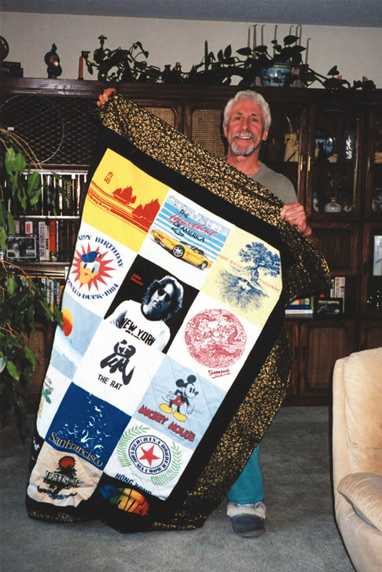

A homemade quilt is much more than a bedcover, it is pieces of our lives stitched together with love.
By Joanne Kennedy
October/November 2006
A homemade quilt is much more than a bedcover, it is pieces of our lives stitched together with love. You can make a personalized 48-by-72-inch quilt from your children’s favorite T-shirts that they’ve outgrown. The quilt will remind them of special events in their lives.
Quilt Materials
15 T-shirts 15 12 1/2-by-12 1/2-inch squares of medium-weight fusible interfacing 4 1/4 yards pre-washed, 100-percent cotton fabric for borders and backing 48-by-72-inch batting or an old flannel sheet One spool of matching thread and two skeins embroidery floss or tying floss
Construct the Quilt Top
Cut a 12 1/2-by-12 1/2-inch square around the image from each T-shirt.
Use an iron to press a square of interfacing to the back of each T-shirt.
Arrange the T-shirt blocks three across and five down, and stitch them together with a quarter-inch seam allowance.
Cut and Sew Borders
Cut six 6 1/2-by-44-inch strips from the border fabric. Sew a strip across the top and bottom of the quilt top with quarter-inch seams, trimming off the excess fabric from each side. Sew the remaining four strips into two long strips. Sew one long strip onto each side of the quilt, trimming off excess fabric.
Layer the Quilt
Cut the rest of the cotton backing into two equal pieces and sew together to make a backing about 57 by 88 inches in size.
With the right side facing down, tape the backing to the floor. Place the batting or flannel sheet over the backing, smoothing it out to eliminate wrinkles.
Place the quilt top, right side up, on the filler, making sure to smooth out any wrinkles. Starting in the middle of the quilt, pin the quilt through all three layers, about every 7 inches, smoothing the material as you go.
Remove the masking tape. Tie your quilt with the floss about every 7 inches, starting in the middle and smoothing the material as you go. Push the needle and about 12 inches of thread through all three quilt layers and then back up, tying the threads in a square knot; you can then trim the thread ends to about 1 inch.
Remove the pins and trim off excess filler; leaving 1 1/2 inches of backing all around. Fold and press a half-inch seam in the backing. Then fold a 1-inch seam over the quilt top, pin and stitch.
Finishing Touches
To make a label, use a small square of muslin material and a permanent marking pen. Write your name, the date, who the quilt was made for and anything else you want. Turn under all label edges and hand-sew it to a back corner of the quilt.
Joanne Kennedy Plattsburgh, New York
 JOANNE KENNEDY Save your child’s memorable moments with a handmade T-shirt quilt.